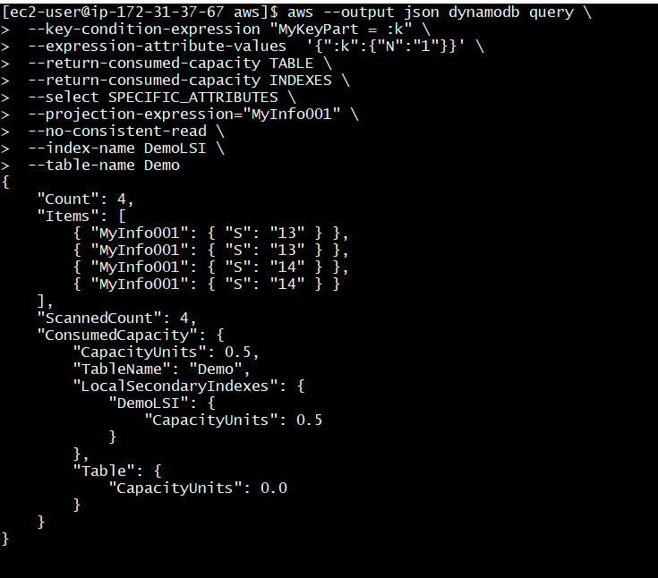
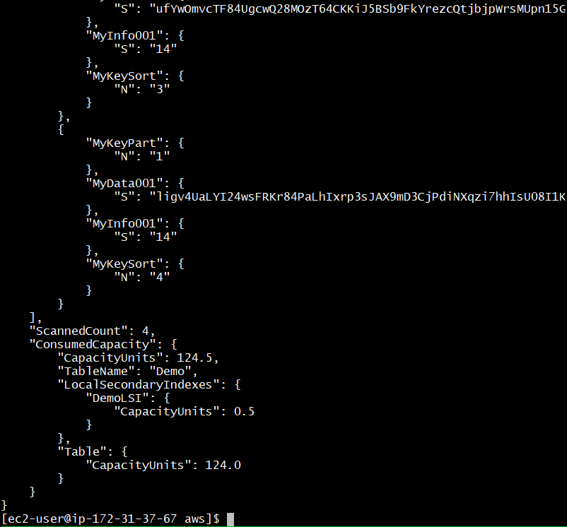

This was first published on https://www.dbi-services.com/blog/dynamodb-covering-lsi/ (2020-03-16)
Republishing here for new followers. The content is related to the versions available at the publication date.
.
This is a continuation on the previous post on DynamoDB: adding a Global Covering Index to reduce the cost. I have a DynamoDB partitioned on “MyKeyPart”,”MyKeySort” and I have many queries that retrieve a small “MyIndo001” attribute. And less frequent ones needing the large “MyData001” attribute. I have created a Global Secondary Index (GSI) that covers the same key and this small attribute. Now, because the index is prefixed by the partition key, I can create a Local Secondary Index (LSI) to do the same. But there are many limitations. The first one is that I cannot add a local index afterwards. I need to define it at the table creation.
Here I am in a lab so that I can drop and re-create the table. In real live you may have to create a new one, copy the items, synchronize it (DynamoDB Stream),…
aws dynamodb delete-table --table-name Demo
while aws --output json dynamodb describe-table --table-name Demo | grep '"TableStatus": "DELETING"' ; do sleep 1 ; done 2>/dev/null | awk '{printf "."}END{print}'
-------------------------------------------------------------------------------
| DeleteTable |
+-----------------------------------------------------------------------------+
|| TableDescription ||
|+----------------+----------------------------------------------------------+|
|| ItemCount | 0 ||
|| TableArn | arn:aws:dynamodb:eu-central-1:802756008554:table/Demo ||
|| TableId | d8238050-556c-4158-85e8-bf90d483d9e2 ||
|| TableName | Demo ||
|| TableSizeBytes| 0 ||
|| TableStatus | DELETING ||
|+----------------+----------------------------------------------------------+|
||| ProvisionedThroughput |||
||+-----------------------------------------------------------+-------------+||
||| NumberOfDecreasesToday | 0 |||
||| ReadCapacityUnits | 25 |||
||| WriteCapacityUnits | 25 |||
||+-----------------------------------------------------------+-------------+||
.. "TableStatus": "DELETING",
I use the same create-table where I add the definition for a “DemoLSI” local index that includes “MyInfo001”:
aws dynamodb create-table \
--attribute-definitions \
AttributeName=MyKeyPart,AttributeType=N \
AttributeName=MyKeySort,AttributeType=N \
--key-schema \
AttributeName=MyKeyPart,KeyType=HASH \
AttributeName=MyKeySort,KeyType=RANGE \
--billing-mode PROVISIONED \
--provisioned-throughput ReadCapacityUnits=25,WriteCapacityUnits=25 \
--local-secondary-indexes ' [{
"IndexName": "DemoLSI",
"KeySchema":[
{"AttributeName":"MyKeyPart","KeyType":"HASH"},
{"AttributeName":"MyKeySort","KeyType":"RANGE"}
],
"Projection":{"ProjectionType":"INCLUDE","NonKeyAttributes":["MyInfo001"]}
}] ' \
--table-name Demo
while aws --output json dynamodb describe-table --table-name Demo | grep '"TableStatus": "CREATING"' ; do sleep 1 ; done 2>/dev/null | awk '{printf "."}END{print}'
Here is the output:
-----------------------------------------------------------------------------------------------
| CreateTable |
+---------------------------------------------------------------------------------------------+
|| TableDescription ||
|+----------------------+--------------------------------------------------------------------+|
|| CreationDateTime | 1584347785.29 ||
|| ItemCount | 0 ||
|| TableArn | arn:aws:dynamodb:eu-central-1:802756008554:table/Demo ||
|| TableId | ebc9488a-fc5f-4022-b947-72b733784a6a ||
|| TableName | Demo ||
|| TableSizeBytes | 0 ||
|| TableStatus | CREATING ||
|+----------------------+--------------------------------------------------------------------+|
||| AttributeDefinitions |||
||+-------------------------------------------+---------------------------------------------+||
||| AttributeName | AttributeType |||
||+-------------------------------------------+---------------------------------------------+||
||| MyKeyPart | N |||
||| MyKeySort | N |||
||+-------------------------------------------+---------------------------------------------+||
||| KeySchema |||
||+-----------------------------------------------------+-----------------------------------+||
||| AttributeName | KeyType |||
||+-----------------------------------------------------+-----------------------------------+||
||| MyKeyPart | HASH |||
||| MyKeySort | RANGE |||
||+-----------------------------------------------------+-----------------------------------+||
||| LocalSecondaryIndexes |||
||+----------------+------------------------------------------------------------------------+||
||| IndexArn | arn:aws:dynamodb:eu-central-1:802756008554:table/Demo/index/DemoLSI |||
||| IndexName | DemoLSI |||
||| IndexSizeBytes| 0 |||
||| ItemCount | 0 |||
||+----------------+------------------------------------------------------------------------+||
|||| KeySchema ||||
|||+----------------------------------------------------+----------------------------------+|||
|||| AttributeName | KeyType ||||
|||+----------------------------------------------------+----------------------------------+|||
|||| MyKeyPart | HASH ||||
|||| MyKeySort | RANGE ||||
|||+----------------------------------------------------+----------------------------------+|||
|||| Projection ||||
|||+-----------------------------------------------------+---------------------------------+|||
|||| ProjectionType | INCLUDE ||||
|||+-----------------------------------------------------+---------------------------------+|||
||||| NonKeyAttributes |||||
||||+-------------------------------------------------------------------------------------+||||
||||| MyInfo001 |||||
||||+-------------------------------------------------------------------------------------+||||
||| ProvisionedThroughput |||
||+------------------------------------------------------------------------+----------------+||
||| NumberOfDecreasesToday | 0 |||
||| ReadCapacityUnits | 25 |||
||| WriteCapacityUnits | 25 |||
||+------------------------------------------------------------------------+----------------+||
..... "TableStatus": "CREATING",
What is very different from the global index is that here I didn’t specify read and write capacity for it. The RCU and WCU is counted within the table provisioned ones. That gives more agility in my case as I don’t have to think about the ratio of my two use cases (read from the index only or read the whole item from the table).
I’m using the same script as in the previous post to put 8 items here. What is different is the output as I can see one additional WCU for the index entry:
----------------------------------
| PutItem |
+--------------------------------+
|| ConsumedCapacity ||
|+----------------+-------------+|
|| CapacityUnits | TableName ||
|+----------------+-------------+|
|| 246.0 | Demo ||
|+----------------+-------------+|
||| LocalSecondaryIndexes |||
||+----------------------------+||
|||| DemoLSI ||||
|||+------------------+-------+|||
|||| CapacityUnits | 1.0 ||||
|||+------------------+-------+|||
||| Table |||
||+------------------+---------+||
||| CapacityUnits | 245.0 |||
||+------------------+---------+||
|| ItemCollectionMetrics ||
|+------------------------------+|
||| ItemCollectionKey |||
||+----------------------------+||
|||| MyKeyPart ||||
|||+------------+-------------+|||
|||| N | 2 ||||
|||+------------+-------------+|||
||| SizeEstimateRangeGB |||
||+----------------------------+||
||| 0.0 |||
||| 1.0 |||
||+----------------------------+||
Again, as with the global one, the local index will be used only when explicitely mentioned. Reading only the small attributes, and mentioning only the table, still reads the whole item. Again, I read 4 items (all from the same partition key):
aws --output json dynamodb query \
--key-condition-expression "MyKeyPart = :k" \
--expression-attribute-values '{":k":{"N":"1"}}' \
--return-consumed-capacity TABLE \
--return-consumed-capacity INDEXES \
--select SPECIFIC_ATTRIBUTES \
--projection-expression="MyInfo001" \
--no-consistent-read \
--table-name Demo
...
"ScannedCount": 4,
"ConsumedCapacity": {
"CapacityUnits": 122.5,
"TableName": "Demo",
"Table": {
"CapacityUnits": 122.5
}
}
}
4 items of 245KB is 122.5 RCUs. 
Here is the same query mentioning the local index:
There, no RCU from the table and 0.5 from the index. This is exactly the same as what I had with the global index, and this is a similar way to optimize the queries that read only a small part of the item.
One advatage of local indexes is that they support consistent reads (–consistent-read):
aws --output json dynamodb query \
--key-condition-expression "MyKeyPart = :k" \
--expression-attribute-values '{":k":{"N":"1"}}' \
--return-consumed-capacity TABLE \
--return-consumed-capacity INDEXES \
--select SPECIFIC_ATTRIBUTES \
--projection-expression="MyKeyPart","MyKeySort","MyInfo001" \
--consistent-read \
--index-name DemoLSI \
--table-name Demo
...
"ScannedCount": 4,
"ConsumedCapacity": {
"CapacityUnits": 1.0,
"TableName": "Demo",
"LocalSecondaryIndexes": {
"DemoLSI": {
"CapacityUnits": 1.0
}
},
"Table": {
"CapacityUnits": 0.0
}
}
}
The cost doubles for consistent reads: 1 RCU for 4 items (smaller than 4KB) instead of 0.5 with eventual consistency.
Another advantage of local indexes is that it automatically get the full item transparently when asking for an additional attribute projection which is not in the index:
aws --output json dynamodb query \
--key-condition-expression "MyKeyPart = :k" \
--expression-attribute-values '{":k":{"N":"1"}}' \
--return-consumed-capacity TABLE \
--return-consumed-capacity INDEXES \
--select SPECIFIC_ATTRIBUTES \
--projection-expression="MyKeyPart","MyKeySort","MyInfo001","MyData001" \
--no-consistent-read \
--index-name DemoLSI \
--table-name Demo
...
"ScannedCount": 4,
"ConsumedCapacity": {
"CapacityUnits": 124.5,
"TableName": "Demo",
"LocalSecondaryIndexes": {
"DemoLSI": {
"CapacityUnits": 0.5
}
},
"Table": {
"CapacityUnits": 124.0
}
}
}

There, I still have 0.5 RCU from the index and now 124 RC from the table. So it is transparent, a bit more expensive than querying directly the table in this case (was 122.5 RCU).
Again, I am in a case where I read all items from a partitioned key so the index is not useful for filtering the items. This is a special case for this demo on covering indexes.
In the previous blog post as in the current one I always mentioned –return-item-collection-metrics with the put-item. This returned nothing when the table had no local index but you can see above that, with local indexes, each put-item returned:
||+------------------+---------+||
|| ItemCollectionMetrics ||
|+------------------------------+|
||| ItemCollectionKey |||
||+----------------------------+||
|||| MyKeyPart ||||
|||+------------+-------------+|||
|||| N | 2 ||||
|||+------------+-------------+|||
||| SizeEstimateRangeGB |||
||+----------------------------+||
||| 0.0 |||
||| 1.0 |||
||+----------------------------+||
This is the size of the collection of items for MyKeyPart=2 and there’s a hard limit of 10GB. This happens when there are local indexes on the table. So, be certain to control the size of the item collection.
Because we chose DynamoDB for its scalability (the storage can grow) and availability (the structure can evolve without downtime), the limitations of Local Secondary Indexes (collection size limit and rebuild the table to create them) make them not very appealing and Global Secondary Indexes may be prefered even when both are possible.
{kind=link}
{kind=link}